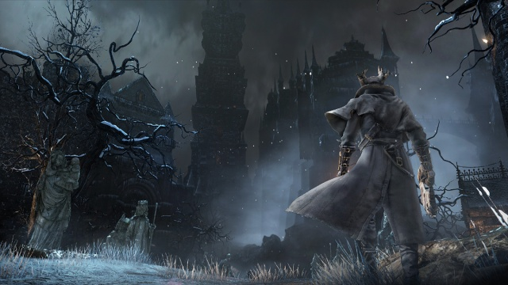

Aqui veremos mais noticias de jogos e seus lançamentos.
Demon Souls é um estilo de jogo para fans de RPG e de quem gosta principalmente de souls like, e o jogo faz muito sucesso pois traz os antigos jogadores que eram fans e os novos que não conhecem muito sobre, se você gosta de dark souls, bloodborne entre outros jogos desse estilo vale a pena conferir demon souls.
Hollow-knight impressiona até hoje por ser simples porem consegue ser maravilhoso do começo ao fim.
Atualizados 2 minutos atrás
Mais um jogo estilo souls like, sekiro impressiona pelo nivel de dificuldade, pelos cenarios e até por ser um jogo com mais mobilidade, e foi isso que o fez ganhar como Game of the year em 2019, mesmo sem muitos concorrentes de peso já sabiamos que sekiro se destacaria, certamente a from software sabe bem como fazer jogos.
Atualizados 2 minutos atrás
Elden Ring o próximo game da desenvolvedora From Software - desta vez em parceria com o escritor George R. R. Martin -, felizmente não se tratava de um delírio coletivo. Depois de anos, o título ganhou novas informações, data de lançamento, plataformas definidas e gameplay.
O jogo acontece em um mundo de dark fantasy e contará com uma espécie de mundo aberto, mas ainda seguindo a fórmula de RPG de ação de Dark Souls, Bloodborne e outros sucessos anteriormente lançados pela From Software. Mas isso é apenas uma fração das informações que temos.
A premissa segue a história de um Tarnished (o personagem controlado pelo jogador) que foi banido de The Lands Between e precisa, primeiramente, reparar o titular Elden Ring para conquistar a glória e se tornar um Elden Lord, após uma grande guerra entre deuses antigos que estão decaindo.